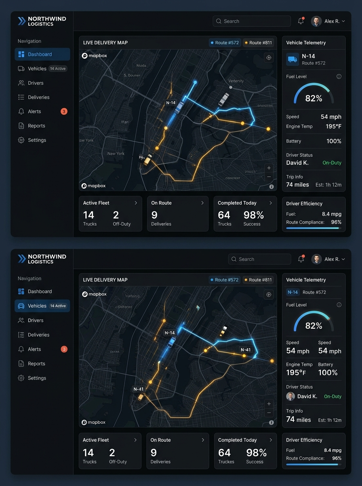
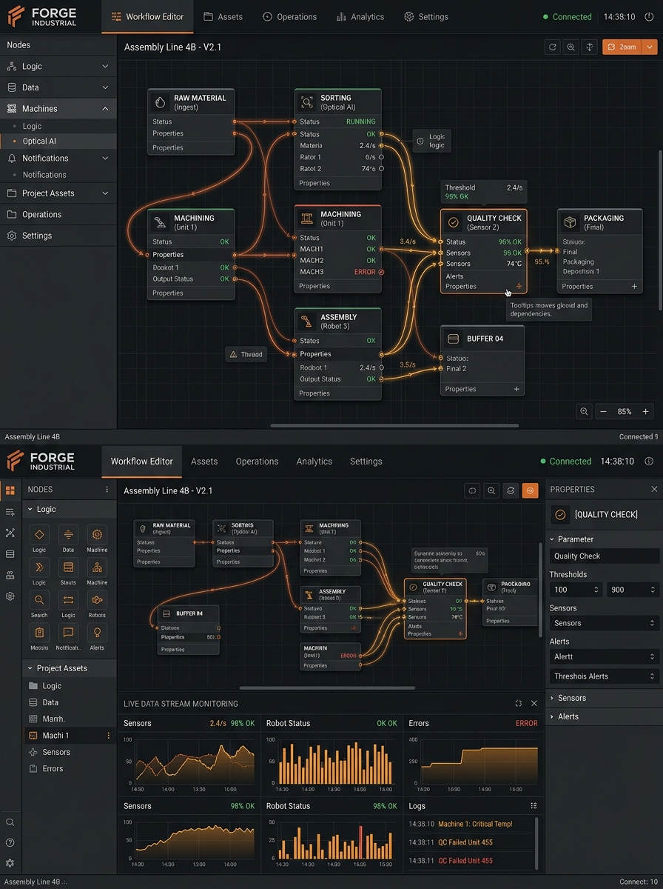
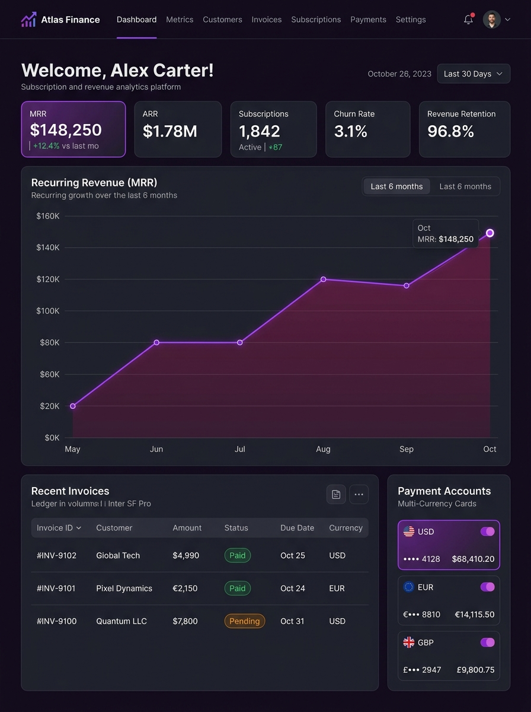
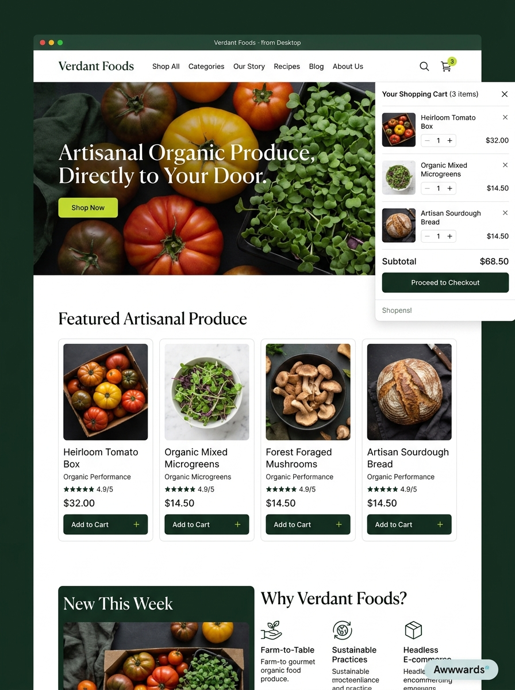

A living gallery of
components & motion.
Every interactive study, 3D WebGL motion specimen, and modular page component extracted and preserved in isolation. Review, test, and swap components without affecting the main site.
- Heroes & Stories
- 04 Flagship
- Process Stories
- 03 Map & Folio
- Motion Studies
- 04 WebGL
- Site Sections
- 06 Modular
Flagship Hero & Story Variations
04 Interchangeable Core Sections
01 Flagship Hero · 3D WebGLCollection 3D Carousel (Hero)
↗The luxury hero gallery featuring 3D crumpled-paper cards on a sine-wave track. Scroll docking, interactive drag, opening un-crumple animation, and project metadata HUD.
Hero · 3D Crumple · Metadata HUD · Autoplay
02 Narrative · 3D UnfoldThe 3D Crumpled Paper Story
↗"Your business runs on crumpled paper." An interactive 3D WebGL simulation where a crumpled paper sheet flattens, becomes a blueprint grid, and builds into 3D UI blocks as you scroll.
Story · Real-time Unfold · Blueprint Grid · Clarity Meter
03 Particles · 5-Stage StoryFoggy Idea to Product (Particles)
↗"From foggy idea to finished product." Real-time particle simulation with thousands of floating points morphing across 5 states: Fog → Scribble → Wireframe → Build → Finished Product.
Particles · Fluid dynamics · 5 Morphing StatesSelected Projects Album (Hero)
↗Full-viewport landing hero alternative with a horizontal thumbnail strip, blur-to-focus backdrop transition, and 4-second auto-cycle across featured studio work.
Thumbnail strip · Blur reveal · Auto-cycleMotion & Shader Lab Studies
04 Extracted Standalone ExperimentsWaving Paintings
↗Sine-wave carousel where five framed artworks drift through a continuous fluid current. Drag, wheel, or arrow navigation with an SVG trail sampled from the wave itself.
Sine wave · Drag · Wheel · Keyboard controlsCrumpled Paper Shader Card
↗Archival exhibition board specimen with noise-displaced vertices, topographic contour scan lines, and a signal tear controlled by custom GLSL folding shaders.
Noise displacement · Contour scanlines · GlitchGlitch Painting
↗Signal loss applied to a full-bleed artwork: displaced slices, chromatic RGB channel split, corrupted blocks, and scanlines with adjustable live intensity and bursts.
RGB split · Slices · Live intensity · BurstsLiquid Cloth
↗A silk poster suspended in dynamic current. Fluid spring-mesh simulation with hover-calming, adjustable current speed, and periodic holographic glitch flashes.
Spring mesh · Current · Glitch bursts · Hover calmModular Site Sections
06 Standard Production Sections
09 Interactive TabsWings & Services
↗Interactive service wings showcasing technical offerings (Websites, Automations, Software), deliverables, timelines, and live guarantees for prototypes and builds.
Tabbed specs · Deliverables · PricingWhy & How We Work
↗Step-by-step breakdown of the prototype-first partnership model: no meetings, weekly ship cycles, and flat fixed-price guarantees.
Process · Timeline · Studio principlesVisitor FAQ
↗Accessible accordion FAQ addressing common inquiries regarding code ownership, delivery speed, maintenance, and scope.
Accessible · Smooth expand · CollapsibleContact & Prototype Request
↗High-conversion project intake form with interactive category selectors, brief input, and clear expectation setting.
Form validation · Interactive choices · CTAHeader Navigation
↗Sticky glassmorphic navbar with studio brand mark, jump links, active indicator, and mobile menu toggle.
Sticky · Glassmorphism · Responsive menuStudio Footer
↗Clean ending plate with availability status badge, legal credits, time zone indicators, and back-to-top anchor.
Status badge · Colophon · Jump topStep Stories: Museum Map & Maquette Book
03 Curatorial Process DirectionsDNA Sinus Trail (4 Waving Cards)
↗A simple 4-station horizontal process trail featuring the studio's waving liquid cloth cards in an alternating subtle stagger (one slightly up, one slightly down) with a single dotted DNA sine wave line weaving tightly between them.
DNA Sinus Trail · 4 Staggered Waving Cards · Tight Wave Weave · 1-2-3-4 ProgressArchitectural Folio / Leporello Book
↗Clothbound architectural monograph and model-making handbook. Offers two interactive modes: page-turn monograph spread and unfolded accordion leporello.
Cloth binder · Monograph spread · Leporello unfold · SealsTopographic Process (Single Waving Card)
↗The complete 4-station process map from the downloaded concept rendered as a single panoramic WebGL waving liquid cloth card. Architectural drafting grid, dynamic topographic contours in studio palette, sine wave trace, and interactive waypoints.
Mobila WebAR (Subdomain Demo)
↗Interactive 3D WebGL couch configurator and native 1:1 Augmented Reality mobile handoff. Features Apple ARKit Quick Look (.usdz), Google Scene Viewer (.glb), live dimensional rulers, and QR handoff.
1:1 Real Scale · ARKit & WebXR · Proportional Resizing · QR Handoff